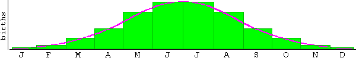

A measure for precision is the standard deviation. To get a feeling for this quantity, look at the pattern or distribution that measurement values tend to follow. Think of the example illustrated in the graph below.

Suppose the horizontal axis represents time during a year, divided into bins of one month, and the heights of the green boxes how many babies are born in your home town in a given month. The pink curve is a smooth interpolation of this bar graph. It represents the normal distribution, multiplied by the total number of births in a year. (See Comment below.) The normal distribution is also called a Gaussian distribution, after C.F. Gauss who introduced it. What could you predict about the birthdate of somebody from your home town based on this distribution?
If you know nothing else about this person, you could say that your best estimate of his birthdate is around the middle of the year with an uncertainty equal to the standard deviation of the curve.
What is this standard deviation (SD) and how do we calculate it? Go on to Page 6 to find out.
Comment. The normal distribution is a probability distribution, which means that the total area under its graph is equal to 1. The area under the pink curve in the graph above is equal to the total number of births in a year. The pink curve represents a function equal to the normal distribution multiplied by the total number of births in a year.